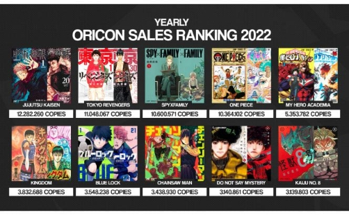

Actualités
Jujutsu Kaisen Saison 2 : épisode 16
Il est enfin là ! Le tant attendu épisode 16 de la saison 2 ; et l'attente en valait la peine. Le studio d'animation nippon Mappa frappe encore une fois un grand coup avec ce nouvel épisode de l'arc de l'Incident de Shibuya, qui vient adapter la rencontre entre le fléau Jogo et son roi, Ryomen Sukuna. À voir dès maintenant sur Crunchyroll.
Jujutsu Kaisen Tome 21
Continuant l'arc de la Traque Mortelle, le tome 21 est enfin sorti ce 05 octobre 2023. On y retrouve Hakari et Panda en route vers la colonie n°2 de Tokyo, où ils vont faire des recontres surprenantes : Charles, un joueur de jeux de culling et créateur de mangas en devenir et Kashimo, un des exorcistes du passé à la force écrasante. À retrouver avec son édition prestige.
Classement des ventes 2022
Fort de son succès mondial et grâce à la suite son histoire palpitante, Jujutsu Kaisen s'installe à la tête des ventes de mangas au Japon pour l'année 2022 ; devant Tokyo Revengers qui a pourtant été porté par la fin de son histoire et le mastodonde One Piece, qui n'est plus à présenter.